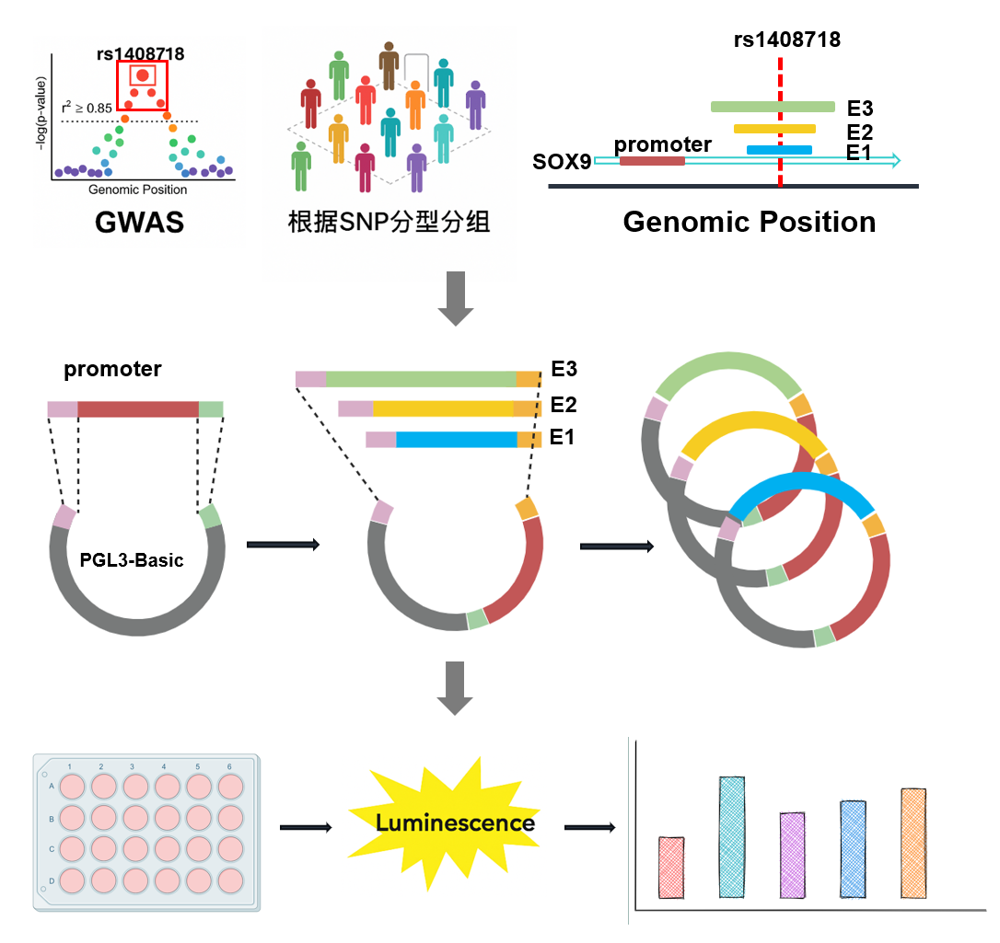
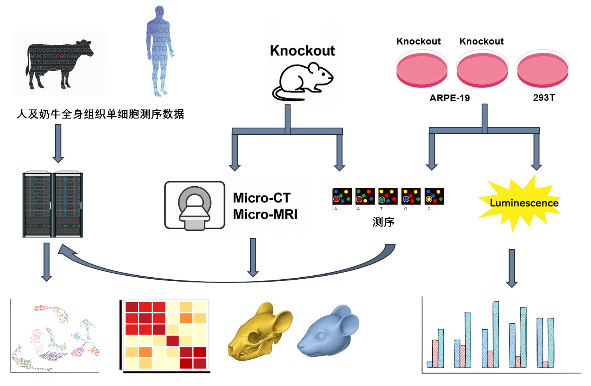
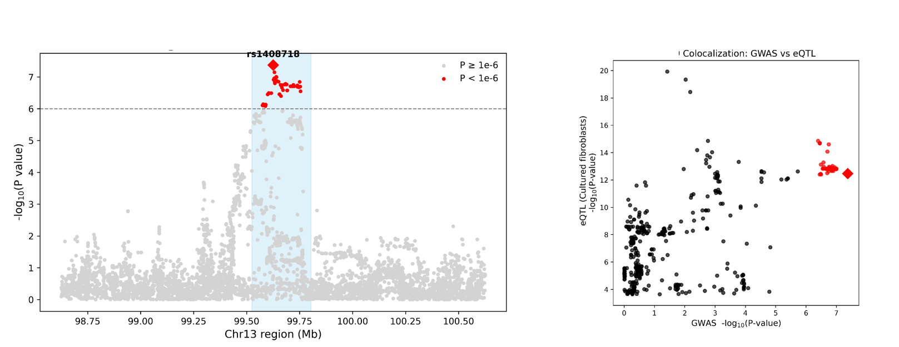
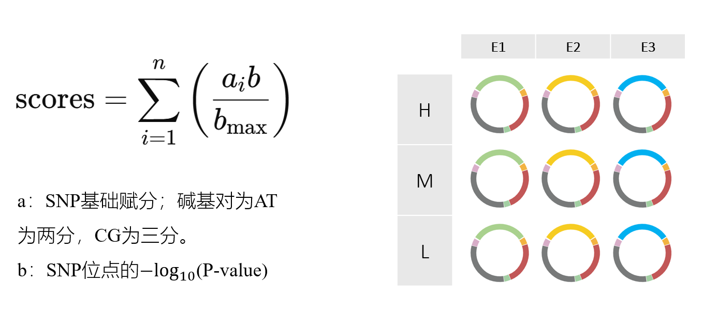
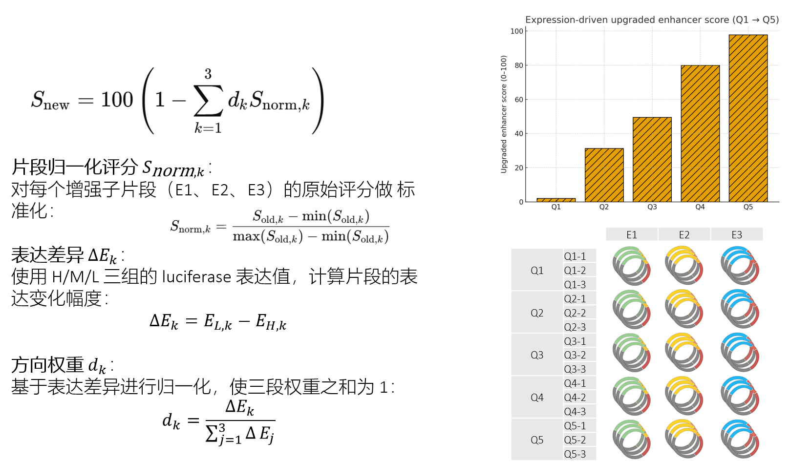
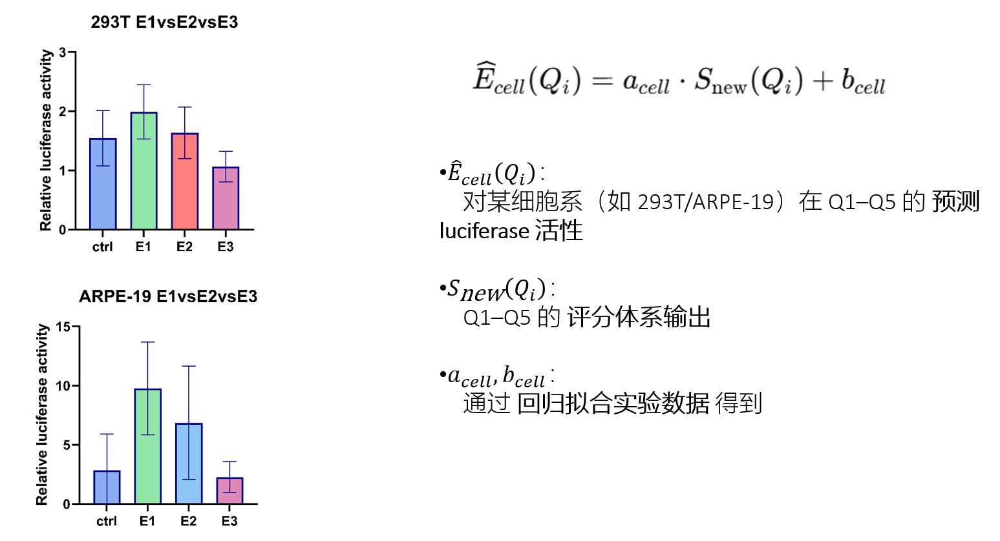
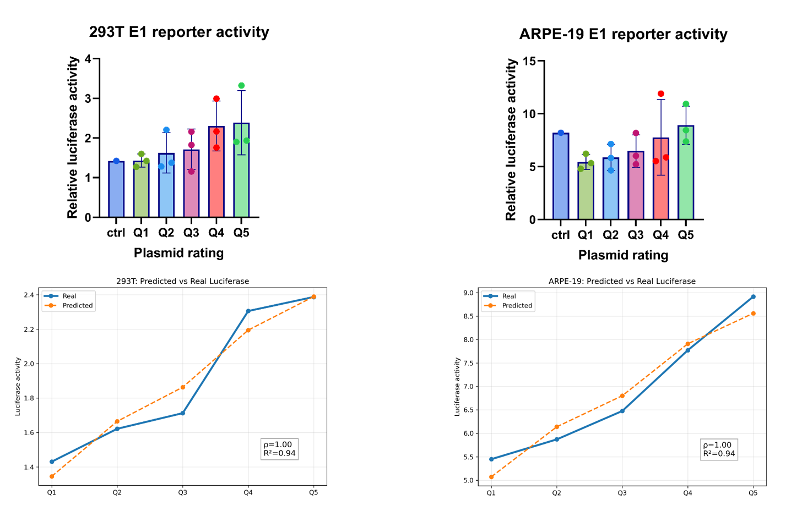
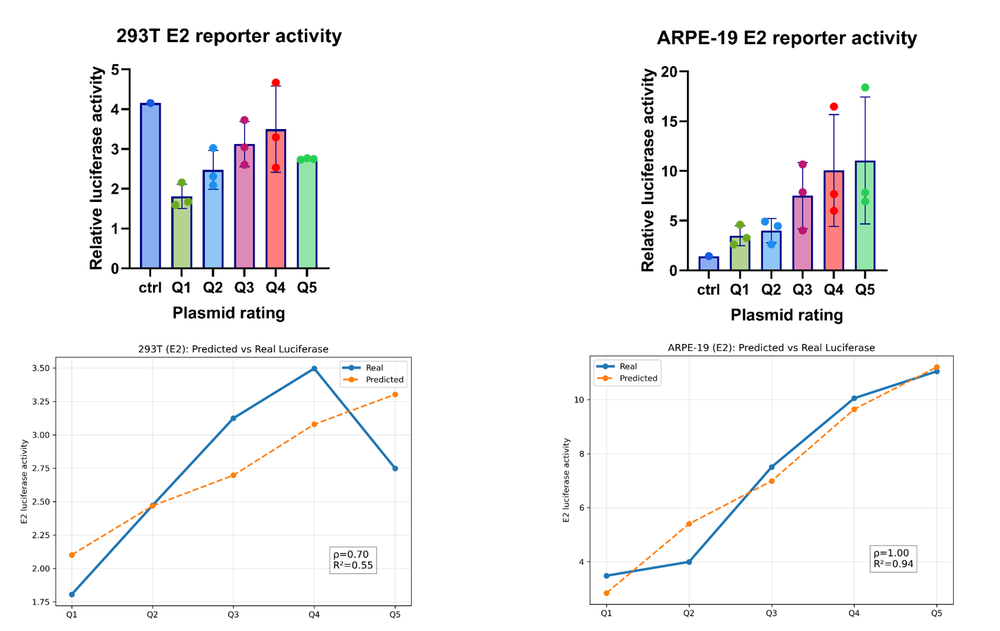

Human Eye SNPs and Cumulative Effects¶
1. Reporter Assay Design Overview¶

基于 GWAS 定位的眼部相关 SNP 区域，依据 SNP 分型选择不同增强子片段（E1/E2/E3），与核心启动子共同克隆至 PGL3-Basic 构建报告体系。通过细胞转染与荧光素酶检测评估不同片段及基因型对转录活性的调控差异。
2. Overall Project Workflow¶

本项目整合人类与奶牛全身组织单细胞测序、细胞与小鼠基因敲除实验、微型CT/MRI 形态学分析及报告基因体系，从多层级验证眼部相关 SNP 的调控效应。通过跨物种转录组与染色质图谱推断功能区域，结合细胞与动物模型的序列与成像数据，系统评估累积遗传变异对眼部发育与表型的影响。
3. GWAS and eQTL Colocalization Analysis¶

GWAS 在目标眼部特征中识别出一处显著关联区间，rs1408718 及其高 LD SNP 形成清晰信号峰。进一步整合 GTEx 等来源的 eQTL 数据，通过共定位分析评估遗传变异对基因表达调控的可能性。GWAS 与 eQTL 在该区域呈现高度一致的统计显著性模式，提示该 SNP 区域可能通过影响局部转录调控驱动眼部表型差异。
4. SNP-Based Scoring and Construct Grouping Strategy¶

通过为不同类型的 SNP 碱基赋予基础分值（AT=2，CG=3），并结合其统计显著性 (-log_{10}(P ext{-value}))，构建累积分数模型。依据最终得分将样本划分为高（H）、中（M）、低（L）三组，并分别在 E1/E2/E3 增强子片段基础上构建对应的报告基因载体，用于系统评估基因型差异对增强子活性的影响。
5. Preliminary Luciferase Reporter Results¶

初步荧光素酶实验显示：在不同 SNP 累积分组中（L/M/H），低分组表现出更高的增强子激活效应，提示累积风险较低的基因型可能具有更强的转录促进能力。在不同增强子片段（E1/E2/E3）比较中，E1 和 E2 的激活效应相对更强，提示功能区域可能集中在更靠近核心 SNP 的区段。整体结果支持 SNP 组合对增强子活性的累积影响，为后续机制验证提供方向。
6. Optimized Scoring System and Refined Construct Grouping¶

基于初步 luciferase 结果，对三段增强子（E1/E2/E3）进行片段归一化与表达差异驱动的权重优化。通过计算各片段在 H 与 L 组间的表达差异量化方向权重 (d_k)，并在归一化评分上重新加权生成新的综合增强子评分 (S_{new})。依据更新后的得分将样本重新划分为五级（Q1–Q5），并在 E1/E2/E3 上构建更精细化的载体组合，以提高基因型—增强子功能关系的分辨率。
7. Final Results and Expression Prediction Model¶

在 293T 与 ARPE‑19 细胞中比较增强子片段（E1、E2、E3）的转录激活能力，结果显示两种细胞系均呈现相似趋势，其中 E1 激活最强。基于前述优化的增强子评分体系 S_new(Qi)，进一步构建细胞系特异的线性预测模型：
E_cell_hat(Qi) = a_cell × S_new(Qi) + b_cell
其中 a_cell 与 b_cell 通过拟合实验数据获得。该模型可根据 Q1–Q5 的分组评分定量预测不同基因型组合在特定细胞系中的潜在表达效应，为后续功能验证提供可计算的表达预测框架。
8. E1 Construct: Measured vs Predicted Expression¶

在 E1 片段的五级评分载体（Q1–Q5）中，293T 与 ARPE-19 细胞均呈现评分提升对应更强的转录激活趋势。预测模型能较好拟合实际 luciferase 结果，相关性显著，说明 E1 在不同基因型组合下的表达效应可被评分体系有效捕捉。
9. E2 Construct: Measured vs Predicted Expression¶

E2 片段在两种细胞系中同样表现出评分与表达的整体正相关。ARPE-19 中预测与实测高度一致，而 293T 细胞中相关性中等，但总体趋势仍能被模型捕捉。结果表明评分体系在片段间具有可迁移性，可用于跨细胞系的表达效应预测。
Expected Project Outcome¶

整合 GWAS 定位、功能预测、V2G 映射、细胞机制验证、动物模型功能分析，以及跨物种多组学数据，本研究将构建从风险 SNP → 调控增强子 → 靶基因表达 → 细胞类型特异作用 → 眼部/颅面表型 的完整因果链条。项目预期产出包括：明确的功能 SNP、验证的调控增强子区域、细胞层面的等位特异调控机制、在体水平的发育/结构改变，以及跨物种的进化保守证据，从而系统性阐明遗传变异对眼部与颅面发育的调控逻辑。